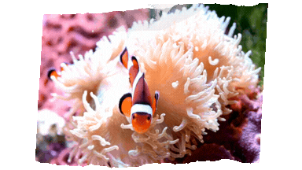

Pode não ser novidade que temos bactérias em nosso corpo, mas e em nosso DNA? A pergunta pode soar exagerada e curiosa, mas essa é uma das explicações mais aceitas da biologia moderna. A teoria endossimbiótica. Segundo essa ideia, estruturas essenciais das nossas células, como as mitocôndrias, tiveram origem em antigas bactérias que, há bilhões de anos, foram englobadas por outras células e passaram a viver em simbiose.
Em vez de serem digeridos, esses microrganismos estabeleceram uma parceria tão eficiente que se tornaram indispensáveis para a vida complexa como conhecemos hoje e o resultado dessa "parceria" está presente em cada célula do seu corpo.
O mais interessante é que há uma relação de "dependência" agora (interdependência). Assim como as mitocôndrias são essenciais para os seres humanos, por exemplo, os seres humanos são essenciais para as mitocôndrias.

[Mídia cedida pela plataforma Canva sob licença educacional]

[Mídia cedida pela plataforma Canva sob licença educacional]